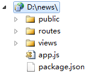
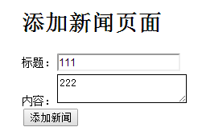
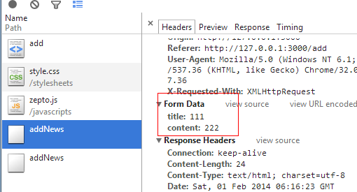
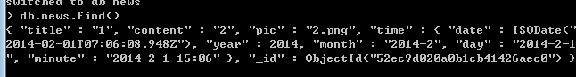
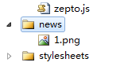
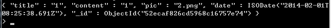
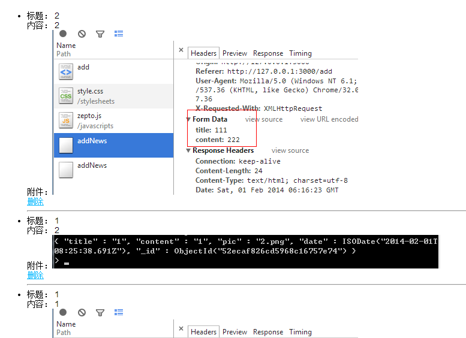

前言
昨天，我们跟着这位大哥的博客（https://github.com/nswbmw/N-blog/wiki/_pages）进行了nodeJS初步的学习，最后也能将数据插入数据库了
但是一味的跟着别人博客写代码肯定不行，所以我们今天就来做一个简单的新闻发布系统，系统第一阶段不需要太难，主要有以下功能
① 新闻类型管理
② 新闻管理（具有图片上传功能）
③ 新闻浏览
功能虽然不多，但是也涵盖很多基本操作了，程序不过增删查改嘛，外加上传附件，够了。于是开始我们今天的学习吧
准备工作
根据昨天的折腾后，我们已经有了nodeJS与mongoDB环境了，现在直接新建工程文件与数据库文件即可
第一步，打开命令符切换到D盘后输入
D:\>express -e news
于是系统会自动开开心心构建基本环境

很明显，里面很多模块依赖没有，这个时候将昨天的package.json直接考过来：
{ "name": "application-name", "version": "0.0.1", "private": true, "scripts": { "start": "node app.js" }, "dependencies": { "express": "3.4.8", "ejs": "*", "mongodb": "*" } }
然后切换到项目目录下：
nmp install
依赖文件全部搞下来了，然后我们输入
D:\news>node app
Express server listening on port 3000
于是，我们的程序高高兴兴的运行起来了，打开网址一看，确实没问题
PS：这里有个问题需要注意，我们下载下来的文件不是UTF-8编码，所以中文可能有乱码，文件编码需要各位自己统一
程序跑起来了就需要数据库相关的配置了
① 首先在mongoDB目录中新建news文件夹
② 为项目新增配置文件settings.js
module.exports = { cookieSecret: 'myNews', db: 'news', host: 'localhost' };
③ 新建models目录，新建db.js
var settings = require('../settings'), Db = require('mongodb').Db, Connection = require('mongodb').Connection, Server = require('mongodb').Server; module.exports = new Db(settings.db, new Server(settings.host, Connection.DEFAULT_PORT), { safe: true });
④ 在桌面新建news.bat程序
d:\mongodb\bin\mongod.exe -dbpath d:\mongodb\news
以后要启动数据库，只需要运行他即可，如此，我们初步的准备工作基本结束
但是这里有两个比较烦的事情，一个是每次要启动news程序很烦，二个是修改任何东西都需要重启，于是我们这里先解决这两个问题
① 在桌面新建news_app.bat，以后运行他就可以启动程序了
node d:\news\app
② supervisor为一进程保护程序，我们可以使用他帮我们重启程序，首先按照，然后调整我们的node_app.bat
supervisor d:\news\app
当然之前需要安装：
npm install -g supervisor
这个样子后，修改了文件就不需要手动重启了（需要将news_app放到项目目录下），于是准备工作到此为止
项目结构
第一步结束后，我们就需要思考下项目结构了
① 首页为index这里将列出所有新闻类型以及对于新闻条目
② 各个新闻条目拥有编辑/删除/查看 三个按钮
③ 首页具有增加新闻按钮（增加时候可上传图片）
基本功能如上
于是，我们去掉app里面的路由功能，将路由全部放到index里面
//将路由功能放入index //app.get('/', routes.index); //app.get('/users', user.list); routes(app);
module.exports = function (app) { //主页，现在也是首页 app.get('/', function (req, res) { res.render('index', { title: 'Express' }); }); app.get('/add', function (req, res) { res.send('增加新闻请求'); }); app.get('/delete', function (req, res) { res.send('删除新闻请求'); }); app.get('/view', function (req, res) { res.send('查看新闻请求'); }); app.get('/update', function (req, res) { res.send('修改新闻请求'); }); };
第一步简单如此，因为增加新闻应该有单独的页面，而具体点击增加按钮又会有其他处理，所以内部还得细分各个请求，现在规定如下：
/ 默认页面，该页面显示所有类型以及新闻，并带有删除按钮
/add 进入添加新闻页面
/addNews 添加新闻具体post请求地址（点击按钮时候的响应）
/delete 删除新闻请求
/view 具体新闻查询
于是稍微修改下上述路由：
module.exports = function (app) { //主页，现在也是首页 app.get('/', function (req, res) { res.render('index', { title: 'Express' }); }); app.get('/add', function (req, res) { res.send('添加新闻页面'); }); app.post('/addNews', function (req, res) { res.send('处理添加新闻请求'); }); app.get('/delete', function (req, res) { res.send('删除新闻请求'); }); app.get('/view', function (req, res) { res.send('查看新闻请求'); }); };
于是我们需要新建几个模板组织我们的网页，这里我们先不分离头尾只要最简单的页面即可
新增add与view两个模板文件，暂时表现与index.ejs一致，并且修改导航相关
module.exports = function (app) { //主页，现在也是首页 app.get('/', function (req, res) { res.render('index', { title: 'Express' }); }); app.get('/add', function (req, res) { res.render('add', { title: '添加新闻页面' }); }); app.post('/addNews', function (req, res) { res.send('处理添加新闻请求'); }); app.get('/delete', function (req, res) { res.send('删除新闻请求'); }); app.get('/view', function (req, res) { res.render('view', { title: '查看新闻请求' }); }); };
至此项目结构结束
数据操作
整体结构出来后，我们就需要进行数据操作了：
① 增加数据（增加新闻）
② 展示数据（展示新闻）
③ 删除数据（删除新闻）
本来还涉及到类型操作的，但是做着做着给搞没了，暂时不管他吧，因为首次做容易迷糊
增加新闻
这里，我们就不使用表单提交了，我们用ajax......这里顺便引入zepto库，于是我们的页面成了这样
<!DOCTYPE html> <html> <head> <title> <%= title %></title> <link rel='stylesheet' href='/stylesheets/style.css' /> <script src="javascripts/zepto.js" type="text/javascript"></script> </head> <body> <h1> <%= title %></h1> <div> 标题：<input type="text" id="title" /> </div> <div> 内容：<textarea id="content"></textarea> </div> <div> <input type="button" type="button" id="ok" value="添加新闻" /> </div> <script type="text/javascript"> $(document).ready(function () { $('#ok').click(function () { var param = {}; param.title = $('#title').val(); param.content = $('#content').val(); $.post('/addNews', param, function () { console.log('添加成功'); }); }); }); </script> </body> </html>

虽然现在还没有请求响应程序，所以数据并不会被处理，另外我们这里的附件也没有（现在附件只允许一个好了），于是再修改下代码，加入图片：
PS：比较麻烦的是图片经过ajax处理有点麻烦，所以我们这里乖乖的换回form操作算了，不然又要搞多久......
<html> <head> <title> <%= title %></title> <link rel='stylesheet' href='/stylesheets/style.css' /> </head> <body> <h1> <%= title %></h1> <form enctype="multipart/form-data" method="post" action="/addNews"> <div> 标题：<input type="text" id="title" name="title" /> </div> <div> 图片：<input type="file" id="pic" name="pic" /> </div> <div> 内容：<textarea id="content" name="content"></textarea> </div> <div> <input type="submit" id="ok" value="添加新闻" /> </div> </form> </body> </html>
这个样子就不需要过多的考虑附件问题，先暂时如此吧，现在先处理请求程序，这里先在public里面新建news文件夹用于存储其图片
model
在models文件夹新增news.js文件，为其构建实体，并赋予新增查询相关操作:


var mongodb = require('./db'); function News(title, content, pic) { this.title = title; this.content = content; this.pic = pic;//保存存储路径 }; module.exports = News; //存储数据 News.prototype = { save: function (callback) { var date = new Date(); var time = { date: date, year: date.getFullYear(), month: date.getFullYear() + "-" + (date.getMonth() + 1), day: date.getFullYear() + "-" + (date.getMonth() + 1) + "-" + date.getDate(), minute: date.getFullYear() + "-" + (date.getMonth() + 1) + "-" + date.getDate() + " " + date.getHours() + ":" + (date.getMinutes() < 10 ? '0' + date.getMinutes() : date.getMinutes()) } //数据存储对象 var news = { title: this.title, content: this.content, pic: this.pic, //图片处理最后来说，现在先乱存 time: time }; //打开数据连接，打开就是一个回调...... mongodb.open(function (err, db) { //错误就退出 if (err) { return callback(err); } //打开news集合 db.collection('news', function (err, collection) { if (err) { mongodb.close(); return callback(err); } //写入集合（写入数据库） collection.insert(news, { safe: true }, function (err) { return callback(err); }); callback(null);//err为null }); }); } };
于是，写入数据库的程序就有了，这里我们来试试能不能插入数据库，当然需要修改路由处的程序
PS：路由处当然不能写过多逻辑代码，这个文件以后还得分离
这个时候/addNews里面的逻辑需要改变
app.post('/addNews', function (req, res) {
var title = req.body.title;
var content = req.body.content;
var pic = req.body.pic;
var news = new News(title, content, pic)
news.save(function (err, data) {
res.send(data);
})
});

查询下，问题不大，现在要解决的就是附件问题了
上传图片
上传图片功能express本身就支持了，express通过bodyParser解析请求体，然后便可通过他上传文件了，其内部使用了formidable
这里将app.js里面的app.use(express.bodyParser())改为：
app.use(express.bodyParser({ keepExtensions: true, uploadDir: './public/news' }));
打开index.js，在前面加一行代码：
fs = require('fs'),
修改一下index文件：
app.post('/addNews', function (req, res) {
for (var i in req.files) {
if (req.files[i] == 0) {
//同步方式删除一个文件
fs.unlinkSync(req.files[i].path);
console.log('success removed an empty file');
} else {
var path = './public/news/' + req.files[i].name;
// 使用同步方式重命名一个文件
fs.renameSync(req.files[i].path, path);
console.log('sunccess renamed a file');
}
}
// var title = req.body.title;
// var content = req.body.content;
// var pic = req.body.pic;
// var news = new News(title, content, pic)
// news.save(function (err, data) {
// res.send(data);
// })
});
这个时候选取文件后点击添加新闻，我们的文件就上传上去了

这个时候，我只需要将文件名记录在数据库即可，文件目录里面就有图片了
app.post('/addNews', function (req, res) {
var pic = null;
for (var i in req.files) {
if (req.files[i] == 0) {
//同步方式删除一个文件
fs.unlinkSync(req.files[i].path);
console.log('success removed an empty file');
} else {
var path = './public/news/' + req.files[i].name;
// 使用同步方式重命名一个文件
fs.renameSync(req.files[i].path, path);
console.log('sunccess renamed a file');
}
pic = req.files[i].name;
}
var title = req.body.title;
var content = req.body.content;
var news = new News(title, content, pic)
news.save(function (err, data) {
res.send(data);
})
res.send('<a href="./">请求成功，返回首页</a>');
});

数据库中有数据了，我们目录也有文件了，现在只需要将数据读出来了
PS：放假兄弟们催的凶，要出去喝酒了
读取数据
第二步当然是读取数据，首先是首页的数据读取：
1 var mongodb = require('./db'); 2 3 4 function News(title, content, pic) { 5 this.title = title; 6 this.content = content; 7 this.pic = pic;//保存存储路径 8 }; 9 10 module.exports = News; 11 12 //存储数据 13 News.prototype = { 14 save: function (callback) { 15 var date = new Date(); 16 17 //数据存储对象 18 var news = { 19 title: this.title, 20 content: this.content, 21 pic: this.pic, //图片处理最后来说，现在先乱存 22 date: date 23 }; 24 25 //打开数据连接，打开就是一个回调...... 26 mongodb.open(function (err, db) { 27 //错误就退出 28 if (err) { 29 return callback(err); 30 } 31 32 //打开news集合 33 db.collection('news', function (err, collection) { 34 if (err) { 35 mongodb.close(); 36 return callback(err); 37 } 38 39 //写入集合（写入数据库） 40 collection.insert(news, { safe: true }, function (err) { 41 return callback(err); 42 }); 43 callback(null); //err为null 44 }); 45 }); 46 } 47 48 }; 49 50 51 //读取文章及其相关信息 52 News.get = function (id, callback) { 53 //打开数据库 54 mongodb.open(function (err, db) { 55 if (err) { 56 return callback(err); 57 } 58 db.collection('news', function (err, collection) { 59 if (err) { 60 mongodb.close(); 61 return callback(err); 62 } 63 var query = {}; 64 if (id) { 65 query.id = id; 66 } 67 //根据 query 对象查询文章 68 collection.find(query).sort({ 69 date: -1 70 }).toArray(function (err, data) { 71 mongodb.close(); 72 if (err) { 73 return callback(err); //失败！返回 err 74 } 75 callback(null, data); //成功！以数组形式返回查询的结果 76 }); 77 }); 78 }); 79 };
<!DOCTYPE html> <html> <head> <title> <%= title %></title> <link rel='stylesheet' href='/stylesheets/style.css' /> </head> <body> <h1> <%= title %></h1> <ul> <%for(var k in data) { %> <li> <div> 标题： <%=data[k].title %></div> <div> 内容： <%=data[k].content%></div> <div> 附件：<img src="news/<%= data[k].pic%>" /></div> </div> <div> <a href="/delete?id=<%=data[k] %>">删除</a> </div> <hr/> </li> <%} %> </ul> </body> </html>

结语
今天，暂时 这样，晚上有约要出去了，有点仓促